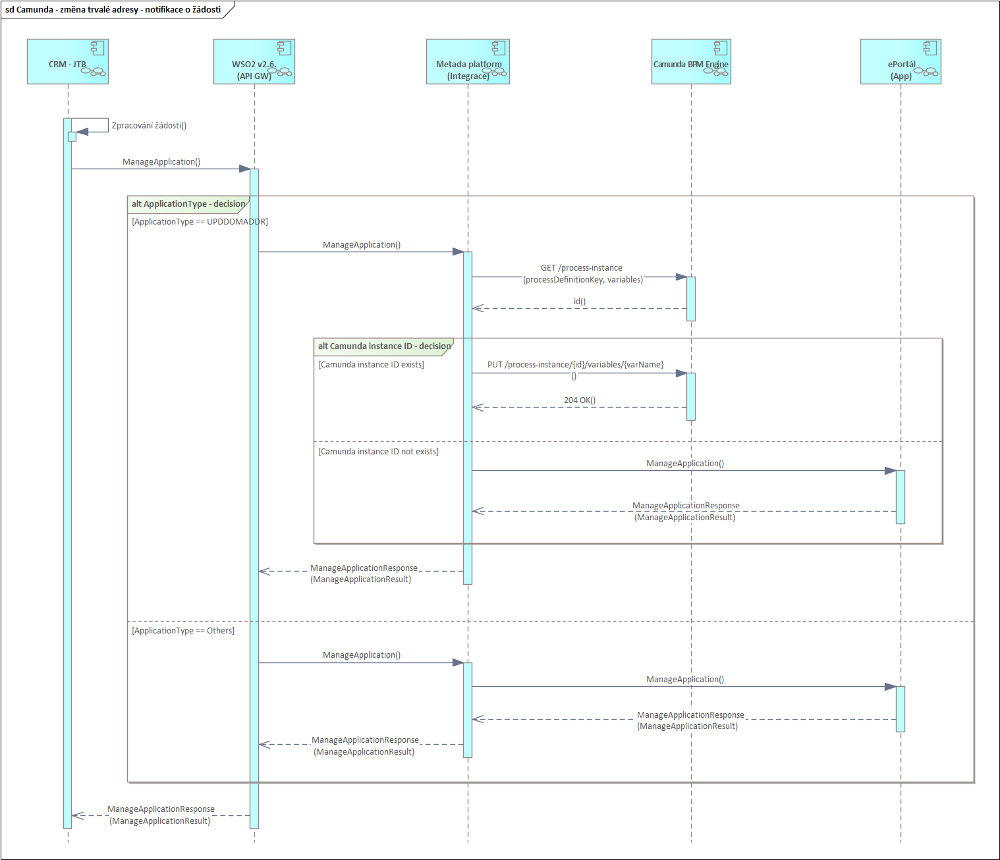
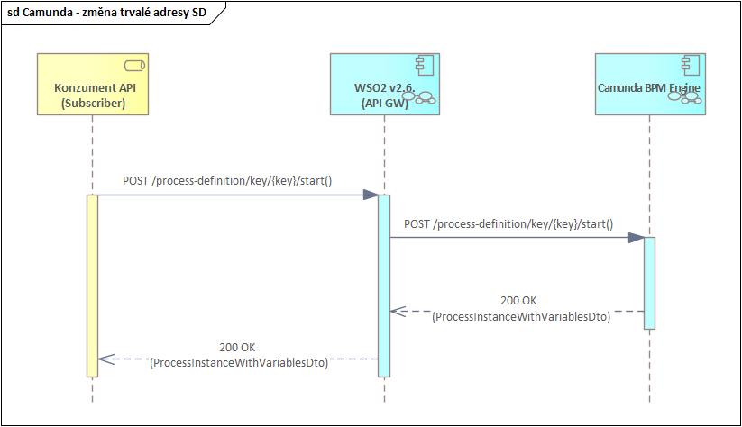
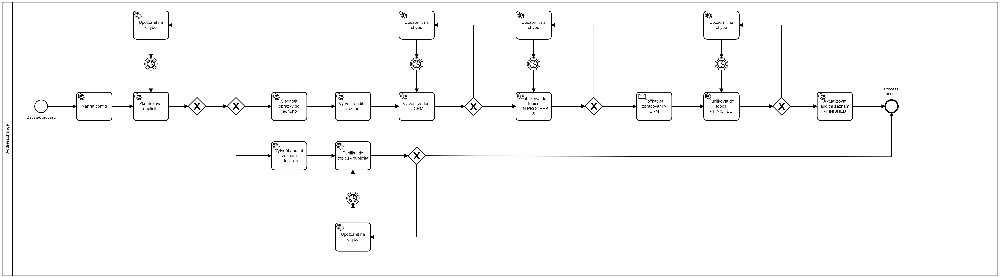

Proces změny trvalé adresy
Request
Metoda
| Metoda | URL | Popis |
|---|---|---|
| POST | /process-definition/key/{key}/start | Vytváří proces změny trvalé adresy |
Parametr key je konstanta "address-change".
Parametry
Umístění | Jméno | Povinnost | Datový typ | Formát | Omezení | Popis |
|---|---|---|---|---|---|---|
header | X-Correlation-ID | mandatory | string | uuid | Korelační identifikátor sloužící k párování žádosti s odpovědí v async REST komunikaci skrze rozhraní a k deduplikaci zpráv v sync/async REST komunikaci, kde dochází ke změně dat | |
header | traceparent | mandatory | string | - | Parametr pro trasování podle standardu W3C Trace Context, vysvětlení viz traceparent hlavičkový atribut | |
path | key | mandatory | string | Číselník applicationType > applicationKey Klíč definice procesu (její nejnovější verze), který má být načten | ||
body | correlationId | mandatory | string | uuid | - | Workaround, dokud nebude podporovat Camunda X-Correlation-ID v headeru: Korelační identifikátor sloužící k párování žádosti s odpovědí v async REST komunikaci skrze rozhraní a k deduplikaci zpráv v sync/async REST komunikaci, kde dochází ke změně dat |
body | applicationConsumerId | mandatory | string | - | - | Instance formuláře žádosti z Digitálních kanálů, slouží k zajištění idempotence v BPM |
body | callingSystem | mandatory | string | - | - | Číselník enterpriseSystemList > Key 1 Identifikátor volajícího systému, který založil žádost v Camundě |
body | applicationType | optional | string | - | - | Číselník applicationType > Key 1 Typ žádosti určuje, na jakou řešitelskou skupinu bude přiřazena (není-li specifikováno, využije se defaultní |
body | applicationBody | mandatory | string | - | - | Obsah žádosti |
body | createdAt | mandatory | string | date-time | - | Datum a čas přechodu žádosti do stavu "Plně podepsaná". |
body | country | mandatory | string | - | enum ['Cz', 'Sk'] | Země, ve které je žádost vytvořená. |
body | klientId | mandatory | string | - | - | CRM ID klienta |
body | filledByKlientId | mandatory | string | - | - | CRM ID osoby (KLID), která vyplnila žádost (např. disponent) |
body | frontIdScan | optional | string | base64 | - | Sken přední strany občanského průkazu |
body | backIdScan | optional | string | base64 | - | Sken zadní strany občanského průkazu |
{
"variables": {
"correlationId": {
"value": "04227009-f5cb-4874-8cee-330aa403ac1d",
"type": "String"
},
"callingSystem": {
"value": "1001123456",
"type": "String"
},
"applicationConsumerId": {
"value": "1001123456",
"type": "String"
},
"applicationType": {
"value": "address-change_permanent",
"type": "String"
},
"applicationType": {
"value": "Žádám o změnu trvalé adresy...",
"type": "String"
},
"frontIdScan": {
"value": "Base64 File",
"type": "File",
"valueInfo": {
"filename": "frontScan.jpg",
"mimetype": "image/jpeg"
}
},
"backIdScan": {
"value": "Base64 file",
"type": "File",
"valueInfo": {
"filename": "backScan.jpg",
"mimetype": "image/jpeg"
}
},
"createdAt":{
"value":"2023-01-12T02:00:00.000Z",
"type":"String"
},
"country":{
"value":"CZ",
"type":"String"
},
"klientId":{
"value":"1000268199",
"type":"String"
},
"filledByKlientId":{
"value":"1000268200",
"type":"String"
}
}
}
Validace
Camunda na rozhraní neumí validovat datové typy ani povinnost jednotlivých request parametrů/atributů.
V případě opakovaného volání se stejným korelačním identifikátorem pro zajištění idempotence Camunda spustí instanci (proces), nicméně hned na začátku kontroluje, zda již nějaká se stejným korelačním identifikátorem neběží. Pokud ano, druhou nastartovanou instanci zruší. Camunda kontroluje i již dokončené žádosti. Camunda si informace o zrušeném procesu ukládá do databáze a zapisuje do topicu - stav Cancelled (viz bod 2 a 3 v kapitole Orchestrace procesu).
Camunda neprovádí změnu velikosti skenů občanských průkazů. Camunda provádí jen jejich sloučení v případě, že klient zasílá naskenované obě strany občanského průkazu.
Digitální kanály budou posílat následující kombinace formátů skenů občanského průkazu:
- 1x PDF - naskenovaný OP z obou stran a sloučený do jednoho PDF
- 1x JPG/PNG - obrázek OP, který je sloučen už od klienta
- 2x JPG/2x PNG - je potřeba obrázky sloučit - obrázky pod sebe
- 1x JPG a 1x PNG - situace ne moc častá, ale teoretický výskyt ano - sloučit obrázky pod sebe a cílový formát vhodnější pro Camundu (JPG nebo PNG).
Orchestrace procesu
1) Založení manuálního procesu změny trvalé adresy v CRM
Camunda volá CRM službu ApplicationWs.ManageApplication.
Endpointy a WSDL
Jméno | Typ | Prostředí | Endpoint CRM | WSDL |
ApplicationWs | SOAP | INT | https://crm-int.jtfg.com:4443/ArbesWs/WS/ApplicationWs.asmx?WSDL | |
AKC | https://crm-akc.jtfg.com:4443/ArbesWs/WS/ApplicationWs.asmx?WSDL | |||
PRE | https://crm-pre.jtfg.com:4443/ArbesWs/WS/ApplicationWs.asmx?WSDL | |||
PROD | https://crm.jtfg.com:4443/ArbesWs/WS/ApplicationWs.asmx?WSDL |
Request
<soap:Envelope xmlns:soap="http://schemas.xmlsoap.org/soap/envelope/" xmlns:crm="http://crm2eportalws/" xmlns:xsi="http://www.w3.org/2001/XMLSchema-instance">
<soap:Header>
<crm:WsSecurityContext>
<crm:KlientID>1000082971</crm:KlientID>
<crm:RequestID>0e21f23e-7bf7-4f86-b2cf-9445d8474e64</crm:RequestID>
</crm:WsSecurityContext>
</soap:Header>
<soap:Body>
<crm:ManageApplication xmlns:crm="http://crm2eportalws/" xmlns:xsi="http://www.w3.org/2001/XMLSchema-instance">
<crm:action>Create</crm:action>
<crm:appl>
<crm:ApplicationType>UPDDOMADDR</crm:ApplicationType>
<crm:Status>Signed</crm:Status>
<crm:ApplicationNumber>941181154</crm:ApplicationNumber>
<crm:CreatedAt>2022-12-07T06:58:27</crm:CreatedAt>
<crm:Processing>Manual</crm:Processing>
<crm:Country>Cz</crm:Country>
<crm:ClientDocument>base64Binary</crm:ClientDocument>
</crm:appl>
</crm:ManageApplication>
</soap:Body>
</soap:Envelope>
| Camunda | ApplicationWs | |||||
|---|---|---|---|---|---|---|
| Jméno | Jméno | Umístění | Povinnost | Datový typ | Konstanta | Popis |
| klientId | KlientID | Header | Mandatory | string | - | CRM ID klienta (KLID) |
| correlationId | RequestID | Header | Optional | uuid | - | Identifikace volání |
| - | action | Body | Optional | string | Create | Příznak, zda vytvořit nebo aktualizovat žádost |
| - | ApplicationType | Body | Mandatory | string | UPDDOMADDR | Typ žádosti |
| - | Status | Body | Mandatory | string | Signed | Stav žádosti |
| Vymyslet vlastní ID, nelze použít Camunda ID (uuid formát) | ApplicationNumber | Body | Mandatory | int | - | Číslo žádosti zasílané volajícím |
| createdAt | CreatedAt | Body | Mandatory | dateTime | - | Datum a čas vytvoření žádosti |
| - | Processing | Body | Optional | string | Manual | Zpracování žádosti - manuální/automatické |
| country | Country | body | Optional | string | - | Země, ve které je žádost vytvořená - Cz/Sk. |
| frontIdScan | ClientDocument | Body | Mandatory | base64Binary | - | Sken dokumentu (Poznámka: CRM na tomto atributu nevaliduje velikost nebo formát posílaného obrázku. Chyba se vrací v případě, že se posílá nevalidní base64 znak, nebo že atribut není vyplněný/neposílá se vůbec.) |
| backIdScan | ||||||
Response
<?xml version="1.0" encoding="utf-8"?>
<soap:Envelope xmlns:soap="http://schemas.xmlsoap.org/soap/envelope/" xmlns:xsi="http://www.w3.org/2001/XMLSchema-instance" xmlns:xsd="http://www.w3.org/2001/XMLSchema">
<soap:Header>
<WsSecurityContext xmlns="http://crm2eportalws/">
<KlientID>1000082971</KlientID>
<RequestID>0e21f23e-7bf7-4f86-b2cf-9445d8474e64</RequestID>
</WsSecurityContext>
</soap:Header>
<soap:Body>
<ManageApplicationResponse xmlns="http://crm2eportalws/">
<ManageApplicationResult>98cb6302-edc7-ec11-9103-005056991fab</ManageApplicationResult>
</ManageApplicationResponse>
</soap:Body>
</soap:Envelope>
| ApplicationWs | |||||
|---|---|---|---|---|---|
| Jméno | Umístění | Povinnost | Datový typ | Konstanta | Popis |
| KlientID | Header | Mandatory | string | - | CRM ID klienta |
| RequestID | Header | Mandatory | uuid | - | Identifikace volání zaslané volajícím |
| ManageApplicationResult | Body | Mandatory | uuid | - | CRM ID žádosti |
2) Camunda ukládá informace o žádosti
Camunda neukládá historii všech stavů jednotlivých žádostí, ale pro každou žádost drží záznam s posledním stavem, ve kterém se právě nachází. Tato historie je dostupná i po dokončení procesu v Camundě (po ukončení instance Camundy).
Ukládané informace
| Atribut | Mapování na topic | Popis |
|---|---|---|
| Datum a čas vytvoření žádosti | applicationCreatedDate | Jedná se o hodnotu z atributu createdAt, kterou posílá konzument při zakládání procesu v Camundě. |
| Datum a čas poslední aktualizace záznamu žádosti v Camunda databázi | businessChangeDate | - |
| Identifikátor instance žádosti volajícího, který bude očekávat odpověď v topicu jako Consumer | applicationIds/applicationConsumerId | Posílá konzument při zakládání procesu v Camundě (pozor, nejedná se o correlationId). Tj. zde ID žádosti vrácené z CRM - atribut ManageApplicationResult. |
| Camunda ID žádosti | applicationIds/camundaId | ID instance procesu. |
| Klíč definice procesu | applicationKey | - |
| Typ žádosti | applicationType | Definuje vazbu na řešitelskou skupinu. |
| Stav žádosti | applicationState | - |
Stavy žádosti
| Stav | Popis |
|---|---|
| InProgress | Žádost/změna se zpracovává |
| Finished | Žádost/změna úspěšně dokončena |
| Rejected | Žádost/změna zamítnutá ze strany CRM Ověřit, jaké stavy posílá CRM při notifikaci ePortálu (čeká se na odpověď od ePortálu/CRM) |
| Cancelled | Zrušené idempotentní volání |
| Failed | Stav, kdy se nelze zotavit z chyby - technické i business |
3) Camunda zapisuje do topicu zpracovávanou žádost
Integrační analýza a datový model topicu je zde. Camunda zapisuje do topicu stav InProgress.
4) Dokončení žádosti v CRM
Na Metadě vznikne rozhraní se stejným předpisem, které má nyní ePortál a které nyní volá CRM. Rozhraní musí být 1:1 jako na ePortálu. Rozhraní bude vystavené na WSO2.
- Předpis rozhraní na ePortálu: ApplicationWs.wsdl
Tato orchestrační služba bude rozhodovat, jaký systém (Camunda vs. ePortál) se má notifikovat ohledně dokončení žádosti.
Přes tuto službu budou chodit všechny notifikace na ePortál - nejenom pro změnu trvalé adresy.
Popis orchestrace
CRM volá rozhraní na Metadě.
- V requestu se v atributu ApplicationType identifikuje druh žádosti.
- CRM v requestu také posílá ID žádosti (atribut ApplicationId). Camunda má toto ID již uložené z odpovědi při zakládání žádosti.
1) Jedná se o změnu trvalé adresy (ApplicationType == UPDDOMADDR)
- Metada volá rozhraní Camundy - operace GET /process-instance s parametry processDefinitionKey (konstanta identifikující změnu trvalé adresy) a variables (formát key_eq_value → applicationId_eq_98cb6302-edc7-ec11-9103-005056991fab) pro zjištění, zda pro dané CRM ID žádosti existuje instance Camundy.
1) Instance Camundy existuje - volá se znovu Camunda, konkrétně operace PUT /process-instance/{id}/variables/{varName}, která nastavuje aktualizovaný stav žádosti, popř. další atributy.
2) Instance Camundy neexistuje - volá se rozhraní na ePortálu, v requestu se předávají stejné atributy, které poslalo CRM.
2) Nejedná se o změnu trvalé adresy (ApplicationType != UPDDOMADDR)
- Metada volá rozhraní na ePortálu, v requestu se předávají stejné atributy, které poslalo CRM.
Sekvenční diagram

5) Uložení dokončené žádosti a zápis do topicu
Camunda aktualizuje v databázi uložený stav žádosti a zapisuje stav Finished do topicu.
Response
| HTTP Status Code | Response |
|---|---|
| 200 | Request successful. |
| 400 | The instance could not be created due to an invalid variable value, for example if the value could not be parsed to an Integer value or the passed variable type is not supported. See the Introduction for the error response format. |
| 500 | The instance could not be created successfully. See the Introduction for the error response format. |
Error handling
Camunda
Error handling je popsán na stránkách s dokumentací Camundy. Používá se oficiální podoba rozhraní, neproběhly na něm žádné dodatečné úpravy/přizpůsobení.
Chyba ve flow procesu Camundy:
- Technické chyby - spadají na obsluhu Camundy k vyřešení. Jedná se i o technické chyby vrácené z CRM.
- Business chyby vrácené z CRM - služba ApplicationWs.ManageApplication pro změnu trvalé adresy žádné business chyby nevrací.
- V případě, že se chybu předanou na obsluhu Camundy nepodaří vyřešit, Camunda zapisuje do topicu stav Failed. Do topicu není potřeba posílat informaci/detail o chybě.
Sekvenční diagram

BPMN diagram
- Diagram odpovídá implementaci v Camundě.

- Proces změny trvalé adresy
- Request
- Response
- Error handling
- Sekvenční diagram
- BPMN diagram
{kind=link}
{kind=link}
{kind=link}